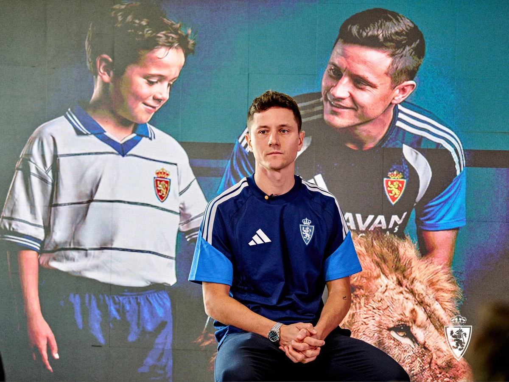

Proyectos / Real Zaragoza 2026/27
Real Zaragoza · 2026/27
Plantilla del Real Zaragoza: minutos, goles y asistencias
Minutos, titularidades, goles y asistencias de la plantilla. Toda la liga, sin mezclar los datos de la Copa.
Datos de liga hasta la jornada 8 · 18/10/2026

Plantilla
Minutos y participación en goles
Toda la temporada de liga, sin filtro de sede. Minutos sin descuento: un titular que juega el partido entero cuenta 90.
Ordeno a los jugadores por minutos para ver quién está teniendo continuidad. La barra ayuda a comparar la participación, pero jugar más no significa jugar mejor. PJ son partidos disputados y Tit., veces que empezó de titular.
| Jugador | PJ | Tit. | Minutos | Goles | Asist. |
|---|
Cómo leo los goles y las asistencias
Me sirven para ver quién aparece en el último pase y en el remate, no para resumir todo lo que aporta un jugador. Aquí no salen, por ejemplo, una presión que provoca una pérdida o un desmarque que abre espacio. Además, la cobertura de asistencias es incompleta: un cero necesita ese contexto.
Ver la participación en los goles sobre el vídeo →